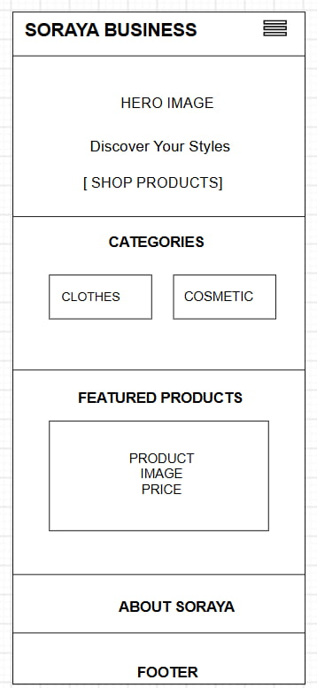
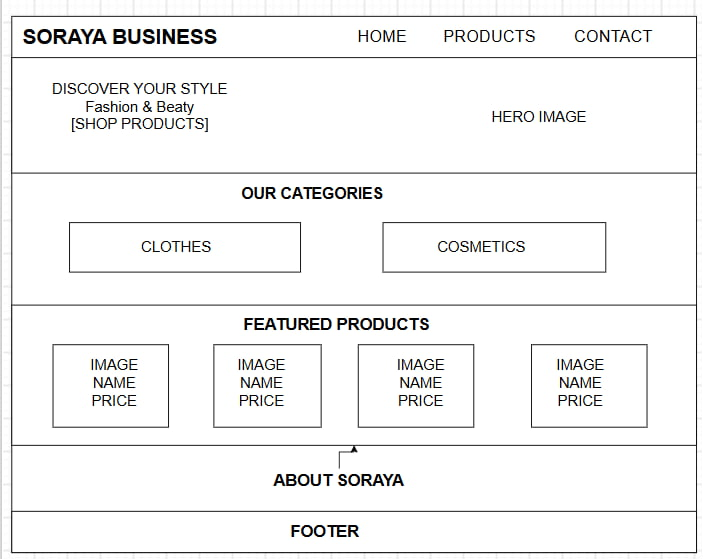

1. Site Name
Soraya Business
The name Soraya Business represents the identity of the business and provides a simple, recognizable name for a women's clothing and cosmetics website.
Possible domain: sorayabusiness.com
2. Site Purpose
The purpose of Soraya Business is to provide an online catalog for women's clothing and cosmetics. Visitors will be able to browse products, view product names, descriptions, prices, categories, and availability.
The website will also provide business information and a contact form so customers can ask questions about products. The site will help customers discover products without having to visit the business in person.
3. Scenarios
- What women's clothing and cosmetic products are currently available at Soraya Business?
- How much does a specific product cost, and is it currently available?
- How can I contact Soraya Business to ask about a product?
- Can I browse products by category, such as clothing or cosmetics?
4. Color Schema
The color palette combines a strong pink with turquoise and neutral tones to create a feminine, modern, and clean visual identity.
Pink — #EC058E
Used for the header, main headings, buttons, links, and important accents.
Turquoise — #62BBC1
Used for secondary accents, borders, highlights, and decorative elements.
Off White — #FFFBFC
Used as the main page background and content-area background.
Black — #010400
Used for body text and important secondary information.
5. Typography
Merriweather
Merriweather will be used for the site title, headings, section headings, and major promotional text.
Lato
Lato will be used for body text, navigation, product descriptions, buttons, forms, and general interface elements.
6. Wireframes
The wireframes below represent the home page layout for small and large viewports. The final wireframes should be hand-drawn or created manually and inserted as images.
Small Viewport — Mobile

Large Viewport — Desktop
